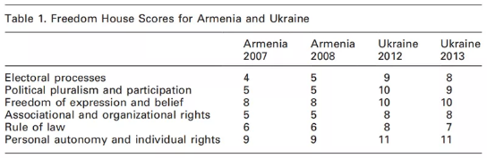

收录于合集 #理论研究 96个

作品简介
作者： Arman Grigoryan，理海大学（Lehigh University）国际关系系助理教授，主要研究方向为国际安全、族群冲突、干涉、国内政治的国际渊源等。
编译： 崔宇涵（国政学人编译员，北京大学党史专业硕士）
来源： Grigoryan, A. (2020). Selective Wilsonianism: Material Interests and the West’s Support for Democracy. International Security 44(4), 158-200.
摘要
2013年，乌克兰爆发了一场反对维克托·亚努科维奇(Viktor Yanukovich)腐败政府的大规模运动，美国及其西欧盟友纷纷予以支持。这项政策被威尔逊式的促进民主的逻辑证明是合理的，并因此受到自由主义者的赞扬。现实主义者在很大程度上也同意自由主义者对该政策的动机的观点，但批评它是一种妄想，并认为随后的乌克兰内战就是这项政策的后果。这是一个谜题，因为在乌克兰事件的五年前，一场大规模的运动撼动了另一个原苏联国家亚美尼亚。尽管支持这次运动的威尔逊式的动机本应更强烈，然而，西方国家对这场运动的态度或漠不关心，或敌视之。西方国家反应的不同是由于两次运动对俄罗斯的立场不同：发生在乌克兰的运动对俄怀有强烈敌意，在亚美尼亚则相反。换句话说，当威尔逊主义与地缘政治动机相吻合时，它才会被触发；而两者背离时，威尔逊主义则会被搁置。有悖于流行的说法，西方对民主的支持往往在其被物质利益强化时出现，并很少会在民主对这种利益构成威胁的时候支持民主。
2013年底，由于时任乌克兰总统亚努科维奇中止和欧洲联盟签署政治和自由贸易协议，转而强化与俄罗斯的关系，乌克兰危机爆发。当乌克兰的抗议者走上街头后，美国及其欧洲盟友立即站起来声援他们。西方权威的自由主义人士将亚努科维奇的下台视为民主的胜利，并谴责俄罗斯煽动乌克兰内战。而现实主义者批评西方政府的行动，称他们挑衅了俄罗斯，他们的行为是受到 “自由主义幻想”（“liberal delusions”） 的启发。作者认为，自由主义者对美国及其西方盟友在乌克兰的政策的解读，以及现实主义的批评，都令人费解。乌克兰危机爆发6年前，在另一个原苏联国家亚美尼亚，同样发生了反对专制政府的运动，而与对乌克兰危机的反应形成鲜明对比的是，西方国家并没有动员起来声援亚美尼亚的抗议者。 为何热衷于支持乌克兰抗议运动的西方政府、组织和媒体，对亚美尼亚运动却漠不关心，甚至怀有敌意？若从现实主义角度重构（reframing）以上问题，则是：为什么亚美尼亚的运动没有引发“自由主义幻想”？
作者认为，很难用自由主义的偏好来解释这一反差。发生在亚美尼亚的运动是完全合法和和平的，而对乌克兰反对派则很难这样形容；亚美尼亚的运动是更加名副其实的自由主义运动（superior liberal credentials）；亚美尼亚的抗议者面对着一个更加专制的政权；它的唯一目标就是恢复民主。 作者指出，两次运动反对派对俄罗斯的态度可以解释西方政策的不同：乌克兰反对派公然敌视俄罗斯，而亚美尼亚反对派并非如此。
主流的自由主义理论源于伊曼努尔•康德(Immanuel Kant)的著作，认为自由主义的偏好，尤其是对民主的支持，推动了民主国家的外交政策。 而西方对乌克兰和亚美尼亚运动的反应，与主流的自由主义理论并不一致，而与西方的历史记录相一致。 尽管与历史记录相悖，现今主流的自由主义叙事却延续至今。这部分地源于它在一定程度上是西方精英中一种普遍的准宗教信仰 ，即使是对意识形态偏好的作用持怀疑态度的现实主义者，也有将某些政策和决定归因于自由主义偏好的悠久传统。 同时，支持康德式叙事的学者们则在论证时犯下了4个方法论上的错误， 包括：（1）选择促进民主的案例，而忽视支持独裁和破坏民选政府的案例；（2）没有解释除了自由主义偏好以外的其他原因，或把这些原因与自由主义偏好简单堆叠到一起；（3）将民主界定为产权、个人权利和有限政府，实际上把支持保守主义的社会经济秩序等同于对民主本身的支持，并可能将任何左翼意识形态描述为不民主的；（4）将在民主变革压力下的让步案例视为促进民主的证据。
下文将分为四节。第一节详述了美国及其欧洲盟国对乌克兰和亚美尼亚运动的不同反应。第二节分析并排除了从自由主义的角度解释上述不同反应的假设。在第三节，作者指出乌克兰和亚美尼亚运动对俄罗斯的不同态度，是西方对它们产生不同反应的根源。第四节，鉴于上述的方法论问题，作者考察了美国和欧盟促进民主的历史记录。
文章导读
01
西方对乌克兰和亚美尼亚运动的反应
本节作者从关注程度、对运动性质的解读、对运动支持与否及其程度几方面，对比了西方国家媒体、政府和政治机构对两次运动的不同反应。
首先，关注度相差悬殊。 西方媒体广泛报道了乌克兰危机，对发生在亚美尼亚的运动则鲜有报道。在Lexis Nexis数据库，以“乌克兰”为搜索词搜索2013年11月21日至2014年2月22日的社论和专栏，共有840条相关记录。而在亚美尼亚运动发生期间以“亚美尼亚”为关键词搜素，仅有4条记录。 同时，西方媒体对两次运动报道的内容也明显不同。 乌克兰危机时，西方媒体宣称这是一场民主的大众运动与腐败的独裁政权之间的斗争；而对于亚美尼亚，美国《纽约时报》的一篇社论，专门驳斥了此次运动是“纯粹的民主美德与专制邪恶”之间的斗争的论述。
这种差异在西方政府与政治精英中也有体现 。 在乌克兰，几乎在抗议活动刚开始时，西方政要们就开始访问抗议者的大本营基辅独立广场(Maidan Square)。抗议活动演变成暴力事件后不久，时任美国国务卿约翰·克里（John Kerry）就宣称，美国和欧洲将与乌克兰人民站在一起战斗。据《纽约时报》报道，时任美国副总统拜登（Joseph Biden）、德国总理默克尔（Angela Merkel）和欧盟委员会主席巴罗佐（José Manuel Barroso）每天都在与亚努科维奇轮流接触。与之形成鲜明对比的是西方对亚美尼亚反对派的不管不问：没有西方高级政客或官僚与抗议者站在一起，没有高级外交官同亚美尼亚政府谈判，运动被当局镇压后也没有任何政府或组织发表谴责声明，没有人呼吁制裁。事实上，西方的姿态不仅仅是对亚美尼亚发生的事件视而不见，在运动被镇压后西方通过的决议中，甚至鼓励亚美尼亚反对派接受该国宪法法院在2008年3月8日的裁决。
02
对西方不同反应的自由主义假设
本节作者检验并驳斥了自由主义者对西方针对乌克兰和亚美尼亚运动做出不同反应的四个假设。第一个假设是乌克兰的运动是和平的，而亚美尼亚的运动不是。而事实显然是相反的。 乌克兰反对派犯下了暴力和非法行为，并无多大争议，这种说法被一些人斥为俄罗斯的政治宣传。但实际上，多家西方媒体也同样报道了反对派的暴力行为。总之，乌克兰抗议活动并非完全和平的证据是不容置疑的。相反，在整个总统竞选和10天的静坐期间，亚美尼亚的反对派并没有暴力或非法行为。
第二个假设与两个运动领导者的自由主义资历（credentials）有关。 上述《纽约时报》的社论声称，在20世纪90年代，“亚美尼亚抗议运动反对派领袖”彼得罗相（Ter- Petrosyan）被西方社会认为曾有操纵选举的“污点”。这或许可以解释为何西方对亚美尼亚的运动态度冷淡。作者则认为，首先，对彼得罗相的指责是不合理的。其次，即使作为运动领袖，亚美尼亚的运动也不能因彼得罗相的历史原因而被指责。第三，即使确有其罪，与乌克兰反对派的领导层相比，彼得罗相的罪行也显得微不足道，乌克兰运动的领导层中有公然的新法西斯分子。
乌克兰的许多抗议者受够了亚努科维奇政府的腐败和无能，希望用一个更廉洁、更有能力的政府取而代之。然而，这场运动中包含了大量具有影响力的非自由主义势力。乌克兰反对派包括许多极右翼民族主义组织，如新极端主义运动“右区”(Right Sector)，以及公开反犹组织乌克兰自由党(Svoboda)。自由党领导人奥列格·佳格尼博克（Oleh Tyahnybok）曾公开发表反犹演讲，并将纳粹集中营的看守奉为英雄。“右区”则是一个准军事组织，对抗议期间的许多暴力行为负有责任，该党同样认同那些难以与自由主义调和的思想。亚美尼亚的运动在意识形态构成上同样复杂，然而，没有一个有影响力的政党或著名政客是极右或其他非自由主义意识形态的追随者。同时，该运动的各党派和组织团结在一个明确的、自由主义的单一议程上，即恢复该国的宪法秩序。
上文提到的对彼得罗相“操纵选举”的指控，主要来自一份民主制度与人权办公室(ODIHR)的报告，所指的是埃里温市选举委员会在计算结果时犯的一个技术错误，该错误没有改变各选区报告的现有票数。作者认为，给彼得罗相贴上独裁者的标签是一种严重的误导。早在亚美尼亚正式独立之前，该国就已开始就其未来国家地位的性质展开激烈辩论，并划分为两大意识形态阵营：一个阵营坚持认为亚美尼亚应该立志成为一个“正常国家”，即自由民主的国家，而另一个阵营则主张亚美尼亚应该成为一个“民族国家”（“national state”）。后一种观点的支持者根据族群定义国家，并认为民主是一个危险的观念。而在整个90年代，彼得罗相是他们最激烈的对手，也是“正常国家”阵营的政治领袖。
第三个假设是乌克兰政府比亚美尼亚政府更加专制和残酷。 但根据对民主和善治的所有可用的指标、对选举质量的评估、腐败的相对程度以及政府对待反对派的残酷程度，结果恰恰相反。 首先，根据自由之家（Freedom House）对发生运动期间两国民主和人权状况进行的测量，乌克兰几乎在每一维度都比亚美尼亚表现更好（见表1）。
表1. “自由之家”对乌克兰与亚美尼亚的有关评分

另外，亚美尼亚政策论坛（Policy Forum Armenia）针对2008年亚美尼亚选举的报告表明，此次选举的投票率明显高于正常预期，同时，不同选区的投票率与两位候选人的得票率也存在强相关关系，足以确定此次选举的欺骗性。 就相对腐败程度而言 ，亚美尼亚的中央政府腐败程度可能更为严重，一份来自美国大使馆的报告称，许多政治寡头和经济精英支持谢尔日·萨尔基相（Serzh Sargsyan），努力保证他们在社会中继续享有特权地位。 最后，对于反对派的态度。 至少乌克兰政府有一定的可信度声称，它在回应抗议者的暴力和非法行为，而没有可信的证据支持亚美尼亚政府的类似说法。
最后一个假设聚焦于西方支持两个运动的相对成本与风险。 但作者认为这一假设同样没有说服力。对于一国反对派的外部支持可能存在3种风险： 现任政权的报复、现任政权盟友的干预，以及政权与反对派之间的对抗升级为内战。 第一种风险在乌克兰和亚美尼亚都不存在。政权盟友的干预方面，两国的潜在外部干预者都是俄罗斯，如果存在俄罗斯进行干预的风险，乌克兰的风险要高于亚美尼亚，因为：（1）对俄罗斯而言，乌克兰比亚美尼亚更重要；（2）俄罗斯也应更担心乌克兰的反对运动，因为乌克兰反对派明确敌视莫斯科。最后，乌克兰内战升级的风险也更高，因为乌克兰是一个族群和宗教高度分裂的社会；相比之下，政府和亚美尼亚大众运动间的冲突没有种族和宗教因素，因此几乎不可能升级为内战。
03
与俄罗斯的竞争 VS 自由主义偏好
西方对乌克兰和亚美尼亚的运动反应不同，主要出于与俄罗斯竞争的考量。支持乌克兰反对派的与遏制俄罗斯在前苏联地区的影响力的政策是一致的，而支持亚美尼亚的运动与其不一致。 动员乌克兰反对派的主要及明确的目标是推翻亚努科维奇退出欧盟谈判，并加入俄罗斯发起的欧亚经济联盟（Eurasian Economic Union）的决定，而这正是西方国家共同乐见的。而亚美尼亚的运动缺乏类似的地缘政治议程。事实上，彼得罗相主动抵制了一些支持者将类似议程强加到运动上的企图，因为俄罗斯是亚美尼亚针对土耳其的主要安全保障。
另外，亚美尼亚政府方面的候选人萨尔基相表示愿意与西方建立更紧密的联系。而西方对萨尔基相的友好态度可能是出于另一种地缘政治考虑，萨尔基相曾向西方表示，他愿意在有关纳戈尔诺- 卡拉巴格的谈判以及陷入僵局的与土耳其关系正常化进程中显示灵活性，这与西方限制俄罗斯在该地区影响力的逻辑相吻合。
04
康德式叙事 VS 历史记录
在本节，作者通过对历史的回顾和梳理，表明乌克兰和亚美尼亚的案例并非反常案例，不同于康德式的叙述，它与历史记录相一致。
1.菲律宾
美国在1898年接管菲律宾后，被认为引入了“从政党、选举到分权的中央管理机构等现代政府的一切特征”。此外，美国的殖民当局建立了独立的司法司法，设立了地方议会，举行了市政选举，并协助发展教育制度和编写法典。菲律宾或许是自由主义论述的一个有力案例。 但作者认为，向菲律宾输出民主制度只是美国殖民菲律宾的副产品，而美国殖民菲律宾，部分是由于燃起的投射美国实力的热情，部分是由于担心西班牙在菲律宾留下的真空可能被日本或德国占领，部分是由于“商业的诱惑”。 这些动机都不是源于自由主义的偏好。 此外，菲律宾的民主化进程最终失败，因为大地主选择、颠覆并最终推翻了美国人在该国建立的任何基本民主制度。 推进民主计划成败与否本不在讨论范围内，但在菲律宾的案例中，美国殖民者选择了与大地主站在一边，并导致了这一失败。菲律宾的案例并非个例，每次美国必须在发展中国家的农民和寡头之间做出选择时，它都选择了寡头。
2.威尔逊“革命”
1912年伍德罗·威尔逊（Woodrow Wilson）当选美国总统后，促进民主成为美国外交政策中一个明确的中心主题。这一理念，以及对自由贸易和集体安全的支持，被称为“威尔逊主义”（Wilsonianism）。威尔逊被认为对美国的外交政策进行了革命性的改革。在威尔逊政府时期，美国首先对中美洲的几个国家进行了几次干预，声称其目的是支持民主和善治。不久后，威尔逊决定参加第一次世界大战，认为为了“确保民主的安全”，就必须参加。随后，他努力建立一个基于民主、自决、自由贸易和集体安全的战后自由秩序。
但作者指出，威尔逊作为外交事务上自由主义革命者的名声被夸大了。 首先，威尔逊对加勒比地区的干预主要是为了确保该地区稳定，使之不为欧洲、特别是德国的干预提供机会。 威尔逊的确热衷于通过鼓励他所谓的“宪政”来确保稳定，然而这种偏好仅仅停留在口头上。事实上，每当民主和稳定走向不同的方向时，威尔逊总是选择稳定，这意味着与寡头和军事机构站在一边。
其次，美国决定参加一战及其后来创建自由主义国际秩序的努力的动机也更为复杂。 美国对德宣战是德国崛起、英国相对衰落以及美国精英阶层日益加剧的焦虑所推动的漫长进程的高潮，他们担心这种权力转移威胁到美国的安全和利益。而威尔逊在战后推动普遍自由秩序的努力，大体上符合美国的物质和战略利益。国际联盟(League of Nations)，如同25年后的联合国一样，由大会和理事会的两级体系构成。除俄国外的一战战胜国，在理事会拥有常任理事国席位和否决权。这样，国际联盟很难将决定强加给任何大国：同时，符合大国偏好的决定将具有正当性（legitimacy）和合法性（legality）的光环。总之，除了威尔逊激昂的理想主义言辞之外，很难看出还有什么能证明促进民主是其政府的重要优先事项。
3.第二次世界大战及战后德国、日本的民主化
在两次世界大战之间的一段时期，美国恢复了原来的孤立主义外交姿态，推广民主的说辞也销声匿迹。但在20世纪30年代后半期，随着德国和日本开始挑战现状，孤立主义者开始失去优势；1941年12月7日日本袭击珍珠港和德国对美国宣战之后，它被彻底打破。把世界从法西斯主义和暴政中拯救出来的自由主义言论又重新出现，要求在国际上建立自由主义经济秩序和尊重人民选择政府的权利的呼声也重新出现。 但是，地缘政治动机明显更好地解释了美国参与二战的原因。 不允许均势发生危险的变化、防止单一大国或敌对联盟统治欧亚大陆的逻辑，在德国威胁要称霸欧洲、日本谋求东亚霸权后，又重新浮出水面。 同样的逻辑也开始影响着美国对苏联的态度。 美国拒绝在二战后划分“势力范围”，坚持在可能最终被苏联控制的国家进行独立和民主选举的主张，并不是对势力范围的拒绝，而是为了遏制苏联在东欧地区的影响。支持东欧的自由选举符合为反对苏联统治该地区制造障碍的战略。
战后，美国立即着手实施至今仍是其历史上最重要的民主促进计划——德国和日本的民主化。然而，这些政策是解散敌对政权的副产品。不管自由主义倾向如何，在两国促进民主也是最好的选择，因为在面临被苏联统治的选择下，两国人民和精英都难以称得上是‘被迫’接受美国的偏好。
4.冷战
对于冷战的自由主义论述似乎是无懈可击的，因为不仅仅是两个超级大国，也是两个而相互排斥的治理和经济组织哲学之间的冲突。但是，冷战不能被仅仅简化为意识形态冲突。二战后美苏是仅存的两个大国。戴尔·科普兰（Dale Copeland）提供了充分的证据，证明美国决策者的依据的确是苏联的力量而不是意识形态。更重要的是，将冷战定性为自由民主与共产主义之间纯粹意识形态冲突，有损于这样一个事实： 在发展中国家，美国扮演了一个保守大国的角色，不仅反对共产主义，还反对左翼民粹主义。 美国把私有产权和限制政府干预经济作为其冷战意识形态的核心，而鉴于许多发展中国家面临的经济和政治问题，这些原则无异于支持与他们原有的封建政治和落后的农业经济。这导致美国支持大量右翼独裁政权，并秘密或公开干预左翼运动和政府，包括智利、危地马拉和伊朗等。
支持自由主义叙事的人提出两个论点来质疑这一证据。第一，美国领导人担心温和的左翼政府最终会被共产党人颠覆，因此，支持右翼政府与其说是减少自由，不如说是减少被共产党颠覆的风险。第二，美国精英认为，通过温和地促使右翼独裁政权做出让步，有利于发展中国家的社会经济变革更安全、更有效地实现。作者认为上述论点存在三个问题。首先，美国对既定秩序的支持主要是出于维护社会经济现状的愿望。其次，在美国推翻民选政府的三个案例中，决策主要由公司利益驱动的，人们对共产主义的恐惧只是为干涉提供了合理化理由。第三，美国的政策得到了负面反馈，决策者开始认为问题不在于共产主义的威胁时，美国对发展中世界社会经济的现状政策没有明显改变。
5.卡特政府时期
卡特政府时期，自由主义理想主义重新出现在美国的外交政策话语中，捍卫人权是其核心。卡特政府将矛头对准了苏联对待持不同政见者和犹太人移民的方式。在很大程度上，正是由于本届政府的努力，最重要的国际人权公约之一——《赫尔辛基最终协议》得以达成。此外，卡特政府取消了对一些拉丁美洲独裁政权的支持，扣留了美国的军事和经济援助。那么，是否可以认为卡特拒绝了现实主义，并支持有原则的外交政策？作者提出4点质疑。 第一，人权议程旨在修复美国因越南战争、智利政变以及支持大量独裁政权而日益加剧的公共关系问题后的国家声誉。第二，卡特的人权议程依然保持了将公民权利置于经济正义之上的传统。 CIA曾在1971年得出结论，非西方国家呼吁建立的“全球经济新秩序”可能会导致公司控股国有化和当地对本地资源的要求，是一个严重的威胁。而人权议程将有助于改变其目标。 第三，人权议程是同苏联重新进行冷战竞争的一个有用工具。第四，随着拉美地区独裁政权的普遍倒台，人们越来越意识到，支持该地区的寡头和独裁者的政策正在产生反作用。
6.里根主义
基于卡特对于友好独裁者的政策的批评，里根政府的政策显露了选择性威尔逊主义最公开的表现；它在威权主义和极权主义政权之间划出了人为的道德界限——后者代表了左翼的独裁政权——并辩称，极权主义政权正是问题所在，而友好的威权主义政权是值得支持的。把民主与保守主义经济秩序等同起来的倾向，在里根时期也同样达到了顶点。
7.冷战之后
美国促进民主的自由主义叙事的最新篇章是冷战结束后的一个时期。有人声称威尔逊主义在这一时期成型为一种连贯的、复杂的学说。作为一个民主促进者，美国采取了更为自信的姿态。可以印证的论据很多，包括为1989年的东欧民主法案、在尼加拉瓜进行自由选举、对科索沃的“人道主义干预”，以及支持格鲁吉亚的“玫瑰革命”和”乌克兰的“橙色革命”等等。这些论据的问题在于，每一个支持民主力量的案例都恰巧是支持亲美势力的。另一个问题是，引用诸如查莫罗胜选（亲美的查莫罗的胜利已成定局）或北约扩张、人道主义干涉科索沃等极具争议的事件或政策作为支持自由主义叙事的证据。
结论
在过去的一百年里，传播民主是美国外交政策的中心任务，也是欧盟周边政策的意义所在，这是一个非同寻常的主张。为了证实这一说法，该叙事的支持者以包括美国和欧洲的主要民主国家支持其他地方民主力量的案例为依据。 然而，对民主的支持同时促进了与民主毫无关系的利益。作者指出，抽象利益和概念实际上是指向具体的政治和经济利益的，也只是追求这些利益的表面现象。
康德式的理论及其叙事也在本文中受到了系统的检验。 如前文所述，捍卫民主被认为是西方支持乌克兰运动的动机，然而，支持乌克兰运动的另一个动机，即削弱俄罗斯在乌克兰的影响力，破坏了这种共识。因此，只有在没有俄罗斯因素的情况下，才能确定该政策与自由主义动机的相关性。亚美尼亚就是一例，2008年的大众运动曾向腐败和专制的亚美尼亚政府提出挑战，而且没有采取反俄的姿态。然而，它并未在西方激起太多的热情。
作者进一步指出，除了对康德式叙事的经验性审视，本文还揭示围绕这一叙事的辩论存在的问题。 这一辩论往往局限于以结构现实主义来对抗康德式的自由主义，因此，每当结构实在论不能解释一个特定证据时，它就被解释为对康德式逻辑的确证。 这显然是一种谬误：一个理论仅仅因为与之对立的理论无法解释一个特定现象，而被认为具备对这一现象的解释力。 显然，如果还有其他潜在可以竞争的理论，对康德式逻辑的正确评估必须要通过与其他理论逻辑的交锋。
译者评述
本文通过对美国等西方国家在面对同样是原苏联国家的乌克兰和亚美尼亚的大规模社会运动时截然不同的政策，质疑了西方学界对其外交政策的康德式自由主义的解读。以中国的视角来看，不难理解美国的外交政策主要动机是其本国的经济及地缘政治利益，所谓“促进民主”的意识形态理念则是次要因素，或更多地只是西方国家对自己外交政策的合理化论述。不过，本文对于现实主义理论在这一议题上的观点做了批判性的分析。现实主义者往往对意识形态因素对外交政策的影响持怀疑态度，但作者指出，在评估美国的外交政策时，现实主义者也经常将之归因于自由主义意识形态的影响，这与现实主义的观点难免有些“错位”。最后，作者在文章中对美国的外交政策进行了大量的历史梳理和案例分析，以表明地缘政治和物质利益是决定美国外交政策的主要因素，而在当代西方的主流叙事中，自由主义的叙事逻辑却仍然牢牢占据主流地位，其中的原因也值得进一步思考和探究。
责编 | 赖永祯 施榕
排版 | 叶拯 马璐
文章观点不代表本平台观点，本平台评译分享的文章均出于专业学习之用, 不以任何盈利为目的，内容主要呈现对原文的介绍，原文内容请通过各高校购买的数据库自行下载。